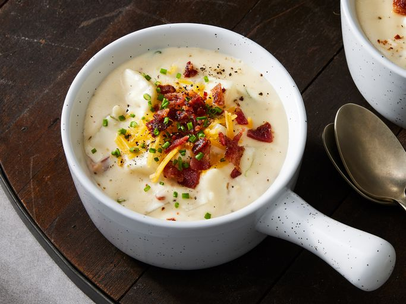

Potato Soup

Description
A hearty, filling, and savory soup for those freezing winter nights by the fire.
Ingredients
- Bacon
- Butter
- Milk
- Flour
- Baked potatoes
- Green onions
- Salt and pepper
- Shredded cheddar cheese
- Sour cream
Steps
- Cook the bacon
- Melt the butter, then whisk in flour and milk
- Add potatoes and onions and bring to a boil
- Reduce to a simmer, then stir in remaining ingredients
- Cook until cheese is melted